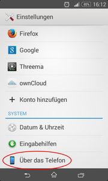
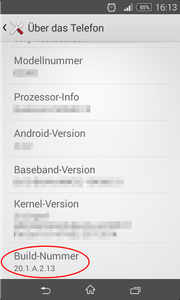
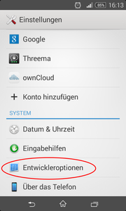
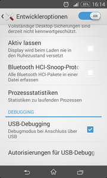
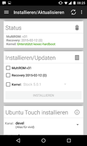
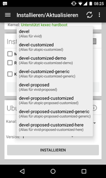
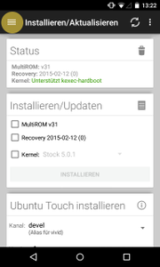
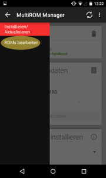
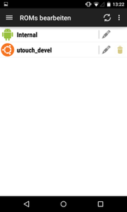

Installation
Dieser Artikel wurde für die folgenden Ubuntu-Versionen getestet:
Dieser Artikel ist größtenteils für alle Ubuntu-Versionen gültig.
Zum Verständnis dieses Artikels sind folgende Seiten hilfreich:
Achtung!
Für jegliche Veränderungen an Ubuntu Touch ist der Besitzer selbst verantwortlich. Weder die Artikelautoren noch ubuntuusers.de haften, falls Probleme auftreten oder das benutzte Gerät im schlimmsten Fall nie mehr gestartet werden kann. Tiefe Systemeingriffe können dazu führen, dass Ubuntu Touch durch einen sogenannten Flashvorgang neu aufgespielt werden muss.
Unter bestimmten Umständen könnte auch dies unmöglich werden - das Gerät und damit auch die Daten sind dann unwiederbringlich zerstört. Schwere Systemeingriffe wie Schreibzugriff auf das System sind inoffiziell, können beispielsweise im Fall der Nutzung von apt-get schnell zu Problemen führen und sind allgemein häufig von Garantieleistungen der Gerätehersteller/ Shops ausgenommen.
Dieser Artikel beschreibt verschiedene Installationsmöglichkeiten für Ubuntu Touch auf unterstützten Geräten.
Ubuntu Touch ist ein Betriebssystem für Smartphones und Tablets mit Touchscreen. Da solche mobilen Smartphones oder Tablet Geräte üblicherweise rund um einen System-on-a-Chip (kurz: SoC) stark angepasst konstruiert werden, verlangt dies auch für die Software starke Anpassung an das jeweilige Gerät. Anders als beim PC kann daher nicht einfach ein beliebiges Gerät genommen werden, sondern es muss darauf geachtet werden, dass das Gerät geeignet ist.
Offiziell von Canonical unterstützte Geräte sind auf der Geschichte von Ubuntu Touch Seite aufgeführt. Weitere, nicht offiziell unterstützte Geräte finden sich hier.
Solo Installation: direkt auf die Smartphone oder Tablet Hardware, Ubuntu Touch alleine auf dem Mobilgerät.
MultiROM-Manager: Ubuntu Touch Installation zusätzlich zum bestehenden Android.
Emulator: Ubuntu Touch Installation in einen Emulator auf den PC - ein Smartphone oder Tablett mit Touch Bedienung wird für den Emulator nicht benötigt. Der Ubuntu Touch Emulator wird in einem extra Wiki Artikel beschrieben: Emulator.
Achtung!
Vor dem Loslegen sollte immer eine Datensicherung ("Backup") gemacht werden.
Datensicherung¶
Dieser Abschnitt beschreibt das Erstellen eines Backups in der Android Installation bevor Ubuntu Touch auf dem Gerät installiert wird.
Achtung!
Vor der Installation von Ubuntu Touch sollten alle Daten des Mobilgeräts gesichert werden. Dies beinhaltet das Sichern der Android-Apps und Daten (Telefonnummern, Adressen, usw.).
Aktivierung der Entwicklerfunktion¶
Zur Sicherung der Android-Daten über USB muss zuerst die Entwicklerfunktion im Gerät freigeschaltet werden. Dort muss "USB-Debugging" aktiviert werden. Android würde sonst das Gerät vor Zugriffen mittels USB und Android Debug Bridge (kurz:adb) schützen. Dieser Zugriff mittels USB und adb wird jedoch für das Backup benötigt und für eine ganze Reihe weiterer Software Werkzeuge.
Gehe zu "Einstellungen → Telefoninfo". Zum Aktivieren der Entwicklerfunktion nun 7x auf "Build-Nummer" klicken.
|  |
| Über das Telefon |
|  |
| Build-Nummer 7x antippen |
|  |
| Entwickleroptionen nun im Menü |
Aktivieren des USB-Debugging¶
Das USB-Debugging muss noch mal extra freigeschaltet werden. Es wird für adb über das USB Kabel benötigt.
Gehe zu "Einstellungen → Entwickleroptionen → USB-Debugging". Hier einen Haken zur Aktivierung setzen und bestätigen.
|  |
| USB-Debugging aktivieren |
Entsperren des Android-Geräts¶
Gerät in den Bootloader[2] booten:
adb reboot bootloader
Hinweis:
Das Gerät befindet sich im Bootloader, wenn der grüne Android-Roboter mit geöffnetem Front-Panel auf dem Rücken liegt.
Kontrollieren der Verbindung¶
Prüfen ob das Gerät mit dem Ubuntu-Desktop Rechner wirklich verbunden ist.
Der Befehl fastboot devices zeigt alle verbunden Geräte an[2].
fastboot devices
Entsperren des Bootloaders¶
Das Ziel, die Solo Installation von Ubuntu Touch rückt bald in greifbare Nähe, jetzt wird der Bootloader des Mobilgeräts vom Terminal des (K)Ubuntu Desktop PCs aus entsperrt[2][3].
sudo fastboot oem unlock
Hinweis:
Auf dem Display des Geräts erscheinen die "Terms of unlocking". Diese müssen bestätigt werden.
Neustart des Geräts¶
Nun ist noch ein reboot des Mobilgeräts nötig, dies wird mit nachfolgendem Befehl ebenfalls vom Terminal[2] des (K)Ubuntu Desktop PCs aus eingeleitet.
fastboot reboot
Nach diesen Befehl startet das Handy mit einen komplett zurückgesetzten Android.
Man muss minimale Informationen eingeben wie bei der Erstbenutzung des Gerätes. Diese werden bei der Ubuntuinstallation
wieder gelöscht.Wichtig ist das USB Debugging erneut eingeschaltet werden muss.
Zum Schluß mit den Befehl
adb reboot bootloader
neu in den Bootloader starten
Danach sollte das Schloss Icon im Bootbildschirm geöffnet sein.
Solo Installation¶
Bei der Solo Installation wird Ubuntu Touch
direkt auf die Smartphone oder Tablet Hardware installiert. Ubuntu Touch ersetzt hierbei das existierende Android System auf dem Mobilgerät. Diese Installation ist die offizielle Methode von Canonical  .
.
Vorbereitungen¶
Hinweis:
Entfernen der Verschlüsselung:
Sollte das Gerät verschlüsselt sein, so muss es auf den Werkszustand zurückgesetzt werden, bevor Ubuntu installiert werden kann. Dies führt zum Löschen aller Daten auf dem Gerät.
ubuntu-device-flash installieren¶
Für die Solo Installation von Ubuntu Touch direkt auf die Smartphone oder Tablet Hardware wird das Software Paket ubuntu-device-flash benötigt. Es wird auf den (K)Ubuntu Desktop PC installiert.
Unter Ubuntu Trusty Tahr (14.04LTS) ist das Paket bereits in den Quellen enthalten: ubuntu-device-flash und wird über das folgende Paket installiert[1]:
ubuntu-device-flash (universe)
 mit apturl
mit apturl
Paketliste zum Kopieren:
sudo apt-get install ubuntu-device-flash
sudo aptitude install ubuntu-device-flash
Hinweis:
Durch die Installation von "ubuntu-device-flash" werden ebenfalls die für Android notwendigen Werkzeuge adb und fastboot hinzugefügt. Eine sehr spärliche Hilfe zu adb findet man in den Manpages. Beendet wird die Hilfe mit Q . Eine ausführlichere Erläuterung von adb gibt es online http://developer.android.com/guide/developing/tools/adb.html.
fastboot hat eine Kurzhilfe, die über den Schalter -h aufgerufen wird.
phablet-tools installieren¶
Die phablet-tools sind ein nützlicher Software Werkzeugkasten für Ubuntu Touch. Die phablet-tools werden ebenfalls auf den (K)Ubuntu Desktop PC installiert.
Die Installation[1] des Pakets erfolgt über:
phablet-tools
mit apturl
Paketliste zum Kopieren:
sudo apt-get install phablet-tools
sudo aptitude install phablet-tools
Anzeigen der verfügbaren Phablet Werkzeuge¶
Um zu ersehen, welche Werkzeuge generell zur Verfügung stehen kann der folgende Befehl[2] verwendet werden:
dpkg -L phablet-tools | grep bin
Diese Werkzeuge sind zur Zeit enthalten:
| Werkzeuge | |
| Werkzeug | Beschreibung |
| phablet-config | Setup Werkzeug. |
| phablet-test-run | Testsuites auf dem Mobilgerät laufen lassen. |
| repo | Repro init installiert ein repro im gerade benutzen Verzeichnis. |
| phablet-demo-setup | Ein Werkzeug zum Setup von Ubuntu Touch Demonstration. |
| click-buddy | Ein Testwerkzeug für Anwendungen |
| phablet-shell | Ein SSH Komfortwerkzeug, es erledigt automatisch mit SSH Schlüsseln, was sonst Handarbeit wäre. |
| phablet-network | Kopiert aktive Netzwerkmanager Einstellungen in das Mobilgerät. |
| phablet-click-test-setup | Ein Testwerkzeug für Click Packages |
| phablet-dev-bootstrap | Phablet Entwicklungsumgebung Setup |
| phablet-screenshot | Screenshot Werkzeug, macht Screenshots vom Ubuntu Touch und holt diese auf den Ubuntu PC. |
| phablet-bootchart | Werkzeug zum Visualisieren des Phablet Boot-Vorganges |
| phablet-flash | Werkzeug zum vorbereiten und Verteilen (zum Beispiel: CD-Image, veraltete "unflipped" Install Images, Image Based Upgrade). |
Beispiel des Nutzens der Hilfe mit "-h"¶
Mit dem Schalter -h kann das jeweilige Phablet Werkzeug eine Kurzhilfe anzeigen. Hier im Beispiel das phablet-screenshot-Werkzeug[2]:
phablet-screenshot -h
Usage: phablet-screenshot [OPTIONS...] <FILENAME>
Dump /dev/fb0 from a touch device and write it to FILENAME
Arguments:
FILENAME Name of the output image, the output format must be supported by
convert from the package imagemagick.
Options
-d,--debug Enable debug
-h,--help This help
-s,--serial SERIAL
Serial number of the device
-z,--resize FACTOR
Resize the image
Installation von Ubuntu Touch auf dem Mobilgerät¶
Wahl des Ubuntu Channels¶
Bei der Installation von Ubuntu muss der "Ubuntu image channel" genannt werden, aus dem das Image bezogen wird. Welcher der beste Channel ist, findet sich in der Beschreibung von Ubuntu.com
Achtung!
Datensicherung ("Backup") auch wirklich gemacht? Jetzt wird es ernst. Die eigentliche Installation von Ubuntu Touch auf dem Mobilgerät steht nun bevor. Was nicht rechtzeitig gesichert wurde, geht verloren.
Zudem sollte das Mobilgerät gut aufgeladen sein, damit nicht wegen zu schwachem Akku irgendetwas beim Flashvorgang schief geht.
Nach all den Vorberereitungen nun die eigentliche Solo Installation von Ubuntu Touch auf dem Mobilgerät über das USB Kabel¶
Ausschalten des Geräts
Reboot in den Bootloader
Installation von Ubuntu aus dem gewählten Channel (Im folgenden Beispiel ist es der Channel "stable")
Das Flashen erfolgt vom Terminal des (K)Ubuntu Desktop PCs aus[2]:
ubuntu-device-flash touch --channel=stable --bootstrap
Beispielausgabe¶
ubuntu-device-flash touch --channel=stable --bootstrap
2015/02/16 09:50:12 Expecting the device to be in the bootloader... waiting 2015/02/16 09:50:12 Device is |mako| 2015/02/16 09:50:12 Flashing version 1 from stable channel and server https://system-image.ubuntu.com to device mako [...]
MultiROM-Manager¶
MultiROM erlaubt das parallele Installieren von mehreren Betriebssystemen auf dem
Mobilgerät.
Neben Android Systemen wird auch die Installation von Ubuntu Touch unterstützt. Welche Geräte von MultiROM unterstützt werden kann man der Website von
MultiROM
entnehmen.
Installation¶
Die Installation von Ubuntu Touch lässt sich bequem über die Android App MultiROM-Manager  realisieren. Diese kann, so wie jede andere App, im Google PlayStore heruntergeladen und installiert werden. Wichtig hierfür sind ein freigeschalteter Bootloader und Root-Rechte .
realisieren. Diese kann, so wie jede andere App, im Google PlayStore heruntergeladen und installiert werden. Wichtig hierfür sind ein freigeschalteter Bootloader und Root-Rechte .
Auf der Webseite des MultiROM Authors Tassadar, finden sich weitere Installationsmöglichkeiten, z.B. für Nutzer von CyanogenMod ohne PlayStore.
Die MultiROM App erledigt das Installieren eines passenden Kernels und einer angepassten Recovery. Danach lassen sich verschiedene Custom-ROMs aus der MultiROM App heraus installieren. Für Ubuntu Touch sind eigene Optionen vorhanden, so kann man nun verschiedene Versionen von Ubuntu Touch auswählen:
| Versionen | |
| Bereich | Beschreibung |
| stable | ist die aktuelle stabile Version (empfohlen). |
| devel | ist die Version die sich aktuell in der Entwicklung befindet. Das bedeutet das es die aktuellsten Updates besitzt und zeigt wohin sich Ubuntu-Touch entwickelt. |
| *-proposed | diese Version wird täglich neu erstellt und ist noch nicht getestet. |
| *-customized | diese Version enthält Anpassungen für Gerätehersteller die Ubuntu-Touch auf Ihren Geräten ausliefern möchten und sollte nicht verwendet werden. |
|  |
| MultiROM-Manager |
|  |
| ROM-Auswahl |
Deinstallation¶
Um Ubuntu Touch einfach wieder zu deinstallieren und um Android zu verwenden bietet der MultiROM Manager hierfür eine eigene Funktion.
|  |
| Auswahl des Menüs |
|  |
| Auswahl 'ROMs bearbeiten' |
|  |
| Deinstallation durch 'Mülleimer' |
flash tool¶
Eine weitere Möglichkeit zum Flashen von Ubuntu Touch auf BQ Geräten bietet das grafische flash_tool.
Links¶
Ubuntu Touch
 Übersichtsartikel
ÜbersichtsartikelEmulator - erste Schritte
Sicherung_und_Wiederherstellung - Datensicherung
- Erstellt mit Inyoka
-
 2004 – 2017 ubuntuusers.de • Einige Rechte vorbehalten
2004 – 2017 ubuntuusers.de • Einige Rechte vorbehalten
Lizenz • Kontakt • Datenschutz • Impressum • Serverstatus -
Serverhousing gespendet von